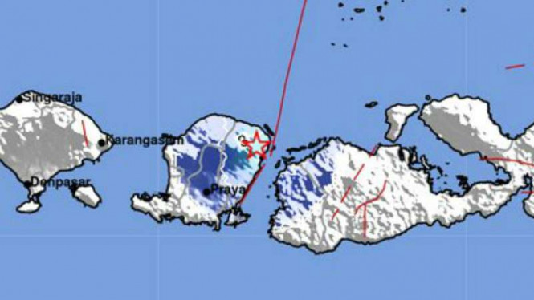

Tsunami Lombok 2018

| Lokasi & Koordinat Bencana | : Lombok, Nusa Tenggara Barat (8.35°S 116.15°E) |
Waktu & Tanggal Kejadian Bencana |
: Minggu, 5 Agustus 2018 pukul 19.46 WITA |
| Penyebab | :Gempa bumi (7 Mw) akibat sesar naik busur belakang Flores (Flores Back Arc Thrust) |
| Kecepatan Gelombang | : Tidak ditemukan |
| Ketinggian Gelombang | :0,5 Meter |
| Jumlah Korban Meninggal | : Tidak ada korban jiwa akibat tsunami, 500 korban jiwa akibat gempa bumi |
| Jumlah Korban Luka-luka | :Tidak ada korban luka akibat tsunami, 1886 korban luka akibat gempa bumi |
| Jumlah Korban Hilang | : Tidak ada atau D=data tidak ditemukan |
| Kerugian | : 17 Triliun dan 149.715 rumah rusak akibat tsunami dan gepa bumi. |
Referensi
BMKG. (2018). “Gempa Lombok Berpotensi Tsunami, BMKG : Jauhi Bibir Pantai”. Diakses dari https://www.bmkg.go.id/press-release/?p=gempa-lombok-berpotensi-tsunami-bmkg-jauhi-bibir-pantai&tag=&lang=ID pada 23 Juni 2021.
Nugroho, B.P. (2018). “Gempa M 7,0 di NTB yang Mengguncang Agustus 2018” Diakses dari https://news.detik.com/berita/d-4360617/gempa-m-70-di-ntb-yang-mengguncang-agustus-2018 pada 23 Juni 2021
Wareza, M. (2018). “Ini Korban Jiwa dan Kerugian dari 3 Bencana Alam RI di 2018”. Diakses dari https://www.cnbcindonesia.com/news/20181225141956-4-47867/ini-korban-jiwa-dan-kerugian-dari-3-bencana-alam-ri-di-2018 pada 23 Juni 2021